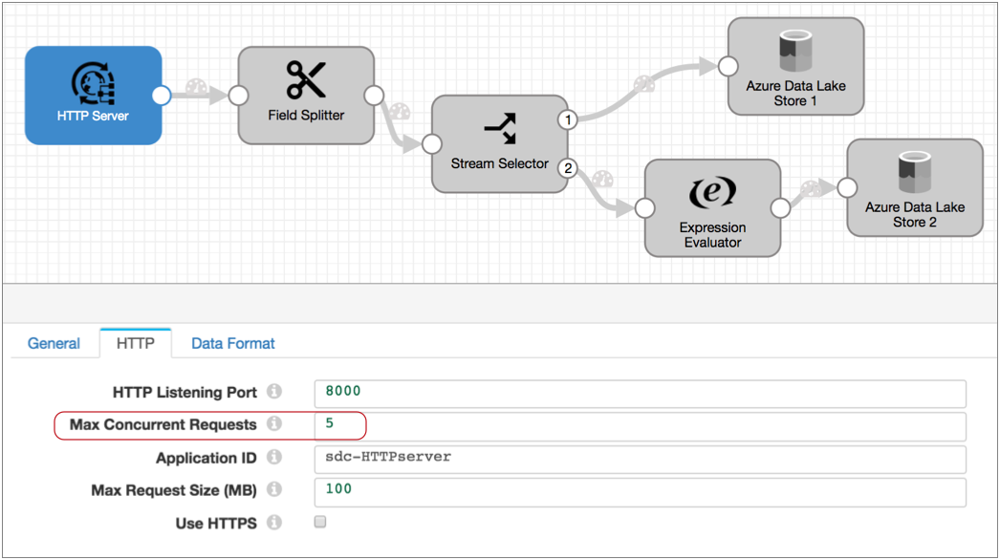
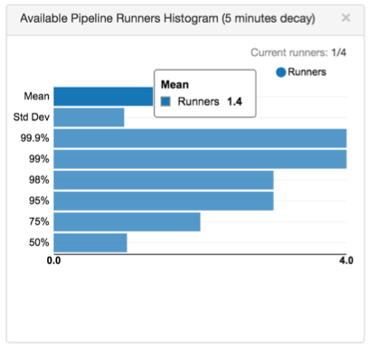

Multithreaded Pipelines
Multithreaded Pipeline Overview
A multithreaded pipeline is a Data Collector pipeline with an origin that supports parallel execution, enabling one pipeline to run in multiple threads.
 Not valid in Data Collector Edge pipelines.
Data Collector Edge pipelines use a single thread to perform processing.
Not valid in Data Collector Edge pipelines.
Data Collector Edge pipelines use a single thread to perform processing.
Multithreaded pipelines enable processing high volumes of data in a single pipeline on one Data Collector, thus taking full advantage of all available CPUs on the Data Collector machine. When using multithreaded pipelines, make sure to allocate sufficient resources to the pipeline and Data Collector.
A multithreaded pipeline honors the configured delivery guarantee for the pipeline, but does not guarantee the order in which batches of data are processed.
How It Works
When you configure a multithreaded pipeline, you specify the number of threads that the origin should use to generate batches of data. You can also configure the maximum number of pipeline runners that Data Collector uses to perform pipeline processing.
A pipeline runner is a sourceless pipeline instance - an instance of the pipeline that includes all of the processors, executors, and destinations in the pipeline and handles all pipeline processing after the origin.
Origins perform multithreaded processing based on the origin systems they work with, but the following is true for all origins that generate multithreaded pipelines:
When you start the pipeline, the origin creates a number of threads based on the multithreaded property configured in the origin. And Data Collector creates a number of pipeline runners based on the pipeline Max Runners property to perform pipeline processing. Each thread connects to the origin system, creates a batch of data, and passes the batch to an available pipeline runner.
Each pipeline runner processes one batch at a time, just like a pipeline that runs on a single thread. When the flow of data slows, the pipeline runners wait idly until they are needed, generating an empty batch at regular intervals. You can configure the Runner Idle Time pipeline property to specify the interval or to opt out of empty batch generation.
Multithreaded pipelines preserve the order of records within each batch, just like a single-threaded pipeline. But since batches are processed by different pipeline runners, the order that batches are written to destinations is not ensured.
For example, take the following multithreaded pipeline. The HTTP Server origin processes HTTP POST and PUT requests passed from HTTP clients. When you configure the origin, you specify the number of threads to use - in this case, the Max Concurrent Requests property:

Let's say you configure the pipeline to opt out of the Max Runners property. When you do this, Data Collector generates a matching number of pipeline runners for the number of threads.
With Max Concurrent Requests set to 5, when you start the pipeline the origin creates five threads and Data Collector creates five pipeline runners. Upon receiving data, the origin passes a batch to each of the pipeline runners for processing.
Conceptually, the multithreaded pipeline looks like this:

Each pipeline runner performs the processing associated with the rest of the pipeline. After a batch is written to pipeline destinations - in this case, Azure Data Lake Store 1 and 2 - the pipeline runner becomes available for another batch of data. Each batch is processed and written as quickly as possible, independently from batches processed by other pipeline runners, so the write-order of the batches can differ from the read-order.
At any given moment, the five pipeline runners can each process a batch, so this multithreaded pipeline processes up to five batches at a time. When incoming data slows, the pipeline runners sit idle, available for use as soon as the data flow increases.
Origins for Multithreaded Pipelines
- Amazon S3 - Reads objects stored in Amazon S3.
- Amazon SQS Consumer - Reads data from queues in Amazon Simple Queue Services (SQS).
- Azure Data Lake Storage Gen1 - Reads data from Microsoft Azure Data Lake Storage Gen1.
- Azure Data Lake Storage Gen2 - Reads data from Microsoft Azure Data Lake Storage Gen2.
- Azure IoT/Event Hub Consumer - Reads data from Microsoft Azure Event Hub.
- CoAP Server - Listens on a CoAP endpoint and processes the contents of all authorized CoAP requests.
- Directory - Reads fully written files from a directory.
- Elasticsearch - Reads data from an Elasticsearch cluster.
- Google Pub/Sub Subscriber - Consumes messages from a Google Pub/Sub subscription.
- Groovy Scripting - Runs a Groovy script to create Data Collector records.
- Hadoop FS Standalone - Reads fully-written files in HDFS.
- HTTP Server - Listens on a HTTP endpoint and processes the contents of all authorized HTTP POST and PUT requests.
- JavaScript Scripting - Runs a JavaScript script to create Data Collector records.
- JDBC Multitable Consumer - Reads database data from multiple tables through a JDBC connection.
- Jython Scripting - Runs a Jython script to create Data Collector records.
- Kafka Multitopic Consumer - Reads data from multiple topics in a Kafka cluster.
- Kinesis Consumer - Reads data from a Kinesis cluster.
- MapR DB CDC - Reads changed MapR DB data that has been written to MapR Streams.
- MapR FS Standalone - Reads fully written files in MapR.
- MapR Multitopic Streams Consumer - Reads data from multiple topics in a MapR Streams cluster.
- Oracle Bulkload - Reads data from multiple Oracle database tables, then stops the pipeline.
- REST Service - Listens on an HTTP endpoint, parses the contents of all authorized requests, and sends responses back to the originating REST API. Use as part of a microservices pipeline.
- SQL Server 2019 BDC Multitable Consumer - Reads data from Microsoft SQL Server 2019 Big Data Cluster (BDC) through a JDBC connection.
- SQL Server CDC Client - Reads data from Microsoft SQL Server CDC tables.
- SQL Server Change Tracking - Processes data from Microsoft SQL Server change tracking tables.
- TCP Server - Listens at the specified ports and processes incoming data over TCP/IP connections.
- Teradata Consumer - Reads Teradata Database data from multiple tables and multiple schemas through a JDBC connection.
- UDP Multithreaded Source - Reads messages from one or more UDP ports.
- WebSocket Server - Listens on a WebSocket endpoint and processes the contents of all authorized WebSocket requests.
- Dev Data Generator - Generates random data for development and testing.
The origins use different properties and perform processing differently based on the origin systems they work with. For details on how an origin performs multithreaded processing, see "Multithreaded Processing" in the origin documentation.
Processor Caching
Since multithreaded pipelines use multiple pipeline runners to run multiple sourceless pipeline instances, processor caching in a multithreaded pipeline can differ from a pipeline that runs on a single thread.
Generally, when a processor caches data, each instance of the processor can only cache the data that passes through that particular pipeline runner. Be sure to consider this behavior when configuring multithreaded pipelines.
For example, if you configure a lookup processor to create a local cache, each instance of the lookup processor creates its own local cache. This should not be a problem since the cache is generally used to improve pipeline performance.
The exception is the Record Deduplicator processor. The Record Deduplicator caches records for comparison for up to a specified number of records or amount of time. When used in a multithreaded pipeline, the records in the cache are shared across pipeline runners.
Monitoring
When you monitor a multithreaded pipeline, the pipeline and stage statistics that display are for the entire pipeline, aggregated across all pipeline runners.
Monitor mode provides the following Available Pipeline Runners Histogram:

The histogram shows a changing snapshot of the frequency of available pipeline runners and the number of runners that are currently available. If you are uncertain of the number that a column displays, hover over it to view the column detail.
For example, the histogram above indicates that the mean is 1.4 available runners, and the standard deviation is one runner.
The runtime statistics available in monitor mode provides the idle batch count, which represents the number of empty batches that have been generated by the pipeline runners. Pipeline runners generate empty batches by default based on the Runner Idle Time pipeline property.
Tuning Threads and Runners
- threads
- Configure the maximum number of threads or concurrency in the origin.
- pipeline runners
- Configure the maximum number of pipeline runners using the Max Runners pipeline property.
For example, say you have a pipeline with the Kinesis Consumer reading from 4 shards. In the origin, you set the number of threads to 4. You also leave the pipeline Max Runners property with the default of 0, which creates a matching number of pipeline runners for the threads - in this case, 4. After you start the pipeline and let it run for a while, you check back and find the following histogram:
The histogram shows that the mean is 1.4, which means at any time, it's likely that there are 1.4 available runners.
If this is the peak load for the pipeline, this means you can reduce the number of pipeline runners used in the pipeline to 3 without sacrificing much performance. If Data Collector resources are needed elsewhere and you don't mind a minor hit to pipeline performance, you might reduce the number of pipeline runners to 2.
Resource Usage
Since each pipeline runner performs all processing associated with the pipeline after the origin, each thread in a multithreaded pipeline requires roughly the same resources as the same pipeline running on a single thread.
When working with multithreaded pipelines, you should monitor the Data Collector resource usage and increase the Data Collector Java heap size when appropriate.
Multithreaded Pipeline Summary
The following points attempt to summarize the key details about multithreaded pipelines:
- Use multithreaded origins to create a multithreaded pipeline. You can use the
following origins at this time:
- Amazon S3 - Reads objects stored in Amazon S3.
- Amazon SQS Consumer - Reads data from queues in Amazon Simple Queue Services (SQS).
- Azure Data Lake Storage Gen1 - Reads data from Microsoft Azure Data Lake Storage Gen1.
- Azure Data Lake Storage Gen2 - Reads data from Microsoft Azure Data Lake Storage Gen2.
- Azure IoT/Event Hub Consumer - Reads data from Microsoft Azure Event Hub.
- CoAP Server - Listens on a CoAP endpoint and processes the contents of all authorized CoAP requests.
- Directory - Reads fully written files from a directory.
- Elasticsearch - Reads data from an Elasticsearch cluster.
- Google Pub/Sub Subscriber - Consumes messages from a Google Pub/Sub subscription.
- Groovy Scripting - Runs a Groovy script to create Data Collector records.
- Hadoop FS Standalone - Reads fully-written files in HDFS.
- HTTP Server - Listens on a HTTP endpoint and processes the contents of all authorized HTTP POST and PUT requests.
- JavaScript Scripting - Runs a JavaScript script to create Data Collector records.
- JDBC Multitable Consumer - Reads database data from multiple tables through a JDBC connection.
- Jython Scripting - Runs a Jython script to create Data Collector records.
- Kafka Multitopic Consumer - Reads data from multiple topics in a Kafka cluster.
- Kinesis Consumer - Reads data from a Kinesis cluster.
- MapR DB CDC - Reads changed MapR DB data that has been written to MapR Streams.
- MapR FS Standalone - Reads fully written files in MapR.
- MapR Multitopic Streams Consumer - Reads data from multiple topics in a MapR Streams cluster.
- Oracle Bulkload - Reads data from multiple Oracle database tables, then stops the pipeline.
- REST Service - Listens on an HTTP endpoint, parses the contents of all authorized requests, and sends responses back to the originating REST API. Use as part of a microservices pipeline.
- SQL Server 2019 BDC Multitable Consumer - Reads data from Microsoft SQL Server 2019 Big Data Cluster (BDC) through a JDBC connection.
- SQL Server CDC Client - Reads data from Microsoft SQL Server CDC tables.
- SQL Server Change Tracking - Processes data from Microsoft SQL Server change tracking tables.
- TCP Server - Listens at the specified ports and processes incoming data over TCP/IP connections.
- Teradata Consumer - Reads Teradata Database data from multiple tables and multiple schemas through a JDBC connection.
- UDP Multithreaded Source - Reads messages from one or more UDP ports.
- WebSocket Server - Listens on a WebSocket endpoint and processes the contents of all authorized WebSocket requests.
- Dev Data Generator - Generates random data for development and testing.
- Unlike a basic, single-threaded pipeline, a multithreaded pipeline cannot
guarantee the order of data.
Data within a batch is processed in order, but since batches are created quickly and passed to different threads, the order of batches can change as they are written to pipeline destinations.
- Processors that cache information generally have a separate cache for each instance of the pipeline. The exception is the Record Deduplicator, which can identify duplicate records across all pipeline runners.
- The pipeline and stage statistics that display during monitoring are aggregated across all threads.
- To optimize performance and resource usage, check the Available Pipeline Runners histogram to see if pipeline runners are being used effectively.
- We recommend monitoring the resource usage of the pipeline and the Data Collector heap usage, increasing them as needed.